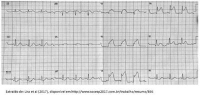

Questão 1 · Medicina Preventiva · 4000194455A identi cação das necessidades de saúde da população é fundamental para orientar o planejamento ações no contexto da regionalização. De acordo com o decreto N 7.508 de 2011, nesta identi cação deve constar a descrição geográ ca da distribuição de recursos humanos, de ações e serviços de saúde ofertados tanto pelo SUS quanto pela iniciativa privada, levando em consideração a capacidade instalada existente, os investimentos e o desempenho através do resultado dos indicadores de saúde. Estas informações compõem o (a):
A região de saúde
B mapa da saúde
C rede de atenção à saúde
D território em saúde
Revisar: possível letra faltando em enunciado
Questão 2 · Medicina Preventiva · 4000193961De acordo com o Decreto n° 7.508/2011, o acesso universal e igualitário à assistência farmacêutica pressupõe: I. Os entes federativos poderão ampliar o acesso do usuário à assistência farmacêutica, desde que questões de saúde pública o justifiquem. II. Para o acesso universal e igualitário à assistência farmacêutica, o medicamento deve ter sido prescrito por pro ssional de saúde, no exercício regular de suas funções no serviço público ou privado; III. A prescrição de medicamento deve estar em conformidade com a RENAME e os Protocolos Clínicos e Diretrizes Terapêuticas ou com a relação especí ca complementar estadual, distrital ou municipal de medicamentos; ter a dispensação ocorrido em unidades indicadas pela direção do SUS. IV. Ter a dispensação ocorrido em unidades indicadas pela direção do SUS. Está(ão) CORRETA(S) as afirmativas:
A I, II, III e IV.
B III e IV, apenas.
C I e II, apenas.
D I, III e IV, apenas.
E III, apenas.
Revisar: possível letra faltando em enunciado
Questão 3 · Descentralização do SUS · 4000190233Assinale a alternativa correta sobre regiões de saúde.
A Cada região de saúde deve ter no mínimo ações e serviços de atenção primária, urgência e emergência, atenção psicossocial e atenção à saúde dos trabalhadores.
B As regiões de saúde são espaços geográficos contínuos constituídos por agrupamentos de municípios limítrofes, delimitados a partir de identidades culturais, econômicas e sociais e de redes de comunicação e infraestrutura de transportes compartilhados.
C As regiões de saúde terão seus limites geográficos, a população usuária das ações e serviços e o rol de ações e serviços ofertados definidos pelo poder legislativo.
D As regiões de saúde interestaduais devem ser exceções e sua criação necessariamente tem que ser aprovada pelo Conselho Nacional de Saúde e pelo Ministério da Saúde.
E As regiões de saúde têm a finalidade de promover a integração da organização, do planejamento e da execução de ações e serviços de saúde, sendo vetadas transferências de recursos entre os entes federativos.
Questão 4 · NOB 0196 · NOB 0191 · NOAS 2001 e 2002 · 4000190169O processo de implantação do SUS foi orientado pelas normas operacionais, que foram publicadas em dois tipos: normas operacionais básicas e normas operacionais de assistência à saúde. Sobre elas, é correto afirmar que
A a NOB 91 inicia o processo de descentralização do SUS.
B a NOB 91 institui o município como gestor do sistema de saúde.
C na NOB 96 são criadas as Comissões Intergestores Bipartite e Tripartite.
D a NOAS 2001 elabora o plano diretor de regionalização.
Questão 5 · Dif erenças entre Incidência e Prevalência · 4000190155Nos meses que compreendem o inverno, é notório o aumento dos casos de infecção das vias respiratórias altas. O aumento das aglomerações em ambientes fechados associado ao aumento da umidade do ar está entre os fatores sociais e ambientais que contribuem na repetição desse padrão a cada ano. No primeiro e no segundo ano da pandemia iniciada em 2020, observou-se que a Covid-19 apresentou variação_______________semelhante ao de outras infecções respiratórias, quando analisada a ______________desse grupo de doenças ao longo dos anos. Assinale a alternativa que preenche corretamente as lacunas.
A cíclica / virulência
B sazonal / transmissibilidade
C cíclica / incidência
D secular / prevalência
Questão 6 · NOB 0196 · 4000190123Com relação ao processo de implantação do SUS e a Norma Operacional Básica 01/96 (NOB96), analise as proposições abaixo. I. Habilitou os municípios como gestores; II. Promoveu a reorganização do modelo de atenção à saúde reforçando ações já implementadas pela NOB-91; III. A criação do piso assistencial básico, repassado fundo a fundo de forma regular e automática foi uma das principais ações. É correto o que se afirma em
A I, apenas.
B II, apenas.
C III, apenas.
D I, II e III.
Questão 7 · Descentralização do SUS · 4000190102No Plano Diretor de Regionalização, deve-se definir alguns conceitos-chave para a organização da assistência no âmbito estadual. No que se refere ao conceito-chave Região de Saúde, assinale a alternativa correta.
A Base territorial de planejamento da atenção à saúde, não necessariamente coincidente com a divisão administrativa do estado, a ser definida pela Secretaria de Estado da Saúde, de acordo com as especificidades e estratégias de regionalização da saúde em cada estado, considerando as características demográficas, socioeconômicas, geográficas, sanitárias, epidemiológicas, oferta de serviços, relações entre municípios, entre outras.
B Módulo territorial com resolubilidade correspondente ao primeiro nível de referência. Constituído por um ou mais municípios, com área de abrangência mínima a ser estabelecida para cada Unidade da Federação, em regulamentação específica.
C Município existente em um módulo assistencial que apresente a capacidade de ofertar a totalidade dos serviços, correspondente ao primeiro nível de referência intermunicipal, com suficiência, para sua população e para a população de outros municípios a ele adscritos.
D Município que, de acordo com a definição da estratégia de regionalização de cada estado, apresente papel de referência para outros municípios, em qualquer nível de atenção.
Questão 8 · NOB 0196 · 4000190083De acordo com a Norma Operacional Básica nº 01/1996 (NOB 01/96), é correto afirmar que
A o processo de centralização deverá contemplar uma lógica de planejamento integrado.
B estabelece o processo de centralização como estratégia de hierarquização dos serviços de saúde.
C cria as Comissões Intergestores Bipartite e Tripartite.
D implementa o Piso da Atenção Básica (PAB).
Questão 9 · Descentralização do SUS · 4000189886Considerada iniciativa autônoma de municípios localizados em áreas geográ cas contíguas que se associam para gerir e prover conjuntamente serviços especializados e de apoio diagnóstico de maior densidade tecnológica à população das municipalidades participantes, estamos falando de:
A Hospital Estadual.
B Unidade básica de saúde.
C Consorcio intermunicipais.
D Unidade de pronto atendimento.
Revisar: possível letra faltando em enunciado
Questão 10 · Redes de Atenção à Saúde RAS · Descentralização do SUS · 4000188664Princípios e Diretrizes do Sistema Único de Saúde SUS Além dos conhecimentos próprios da clínica, o médico deve conhecer a forma de organização do sistema de saúde no qual está inserido como prestador de serviços de saúde, sendo que o conhecimento do médico deve incluir aspectos relacionados à gestão e organização dos serviços de saúde. Considerando o Decreto No 7.508, de 28 de junho de 2011, que regulamenta a Lei No 8.080, de 19 de setembro de 1990, para dispor sobre a organização do Sistema Único de Saúde (SUS), o planejamento da saúde, a assistência à saúde e a articulação interfederativa. Assinale a alternativa que apresenta a definição CORRETA de Serviços Especiais de Acesso Aberto:
A Serviços de atendimento inicial à saúde do usuário no SUS.
B Instâncias de pactuação consensual entre os entes federativos para definição das regras da gestão compartilhada do SUS.
C Conjunto de ações e serviços de saúde articulados em níveis de complexidade crescente, com a finalidade de garantir a integralidade da assistência à saúde.
D Serviços de saúde específicos para o atendimento da pessoa que, em razão de agravo ou de situação laboral, necessita de atendimento especial.
E Agrupamento de municípios limítrofes, delimitado a partir de identidades culturais, econômicas e sociais e de redes de comunicação e infraestrutura de transportes compartilhados, com a finalidade de integrar a organização, o planejamento e a execução de ações e serviços de saúde
Questão 11 · Descentralização do SUS · 4000188662Além dos conhecimentos próprios da clínica, o médico deve conhecer a forma de organização do sistema de saúde no qual está inserido como prestador de serviços de saúde, sendo que o conhecimento do médico deve incluir aspectos relacionados à gestão e organização dos serviços de saúde. Considerando o Decreto No 7.508, de 28 de junho de 2011, que regulamenta a Lei No 8.080, de 19 de setembro de 1990, para dispor sobre a organização do Sistema Único de Saúde (SUS), o planejamento da saúde, a assistência à saúde e a articulação interfederativa. Para assegurar ao usuário o acesso universal, igualitário e ordenado às ações e serviços de saúde do SUS, caberá aos entes federativos, além de outras atribuições que venham a ser pactuadas pelas Comissões Intergestores, EXCETO:
A garantir a transparência, a integralidade e a equidade no acesso às ações e aos serviços de saúde.
B orientar e ordenar os fluxos das ações e dos serviços de saúde.
C monitorar o acesso às ações e aos serviços de saúde.
D ofertar regionalmente as ações e os serviços de saúde.
E dispor sobre critérios, diretrizes, procedimentos e demais medidas que auxiliem os entes federativos no cumprimento de suas atribuições.
Questão 12 · Descentralização do SUS · 4000188661Além dos conhecimentos próprios da clínica, o médico deve conhecer a forma de organização do sistema de saúde no qual está inserido como prestador de serviços de saúde, sendo que o conhecimento do médico deve incluir aspectos relacionados à gestão e organização dos serviços de saúde. Considerando o Decreto No 7.508, de 28 de junho de 2011, que regulamenta a Lei No 8.080, de 19 de setembro de 1990, para dispor sobre a organização do Sistema Único de Saúde (SUS), o planejamento da saúde, a assistência à saúde e a articulação interfederativa. As Comissões Intergestores pactuarão a organização e o funcionamento das ações e serviços de saúde integrados em redes de atenção à saúde, sendo: I - a Comissão Intergestores Tripartite (CIT); II - a Comissão Intergestores Bipartite (CIB) ; e III - a Comissão Intergestores Regional (CIR). Sobre tais comissões, assinale a alternativa CORRETA.
A A CIT está vinculada à Secretaria Estadual de Saúde para efeitos administrativos e operacionais.
B A CIB está vinculada ao Ministério da Saúde para efeitos administrativos e operacionais.
C A CIR está vinculada à Secretaria Estadual de Saúde para efeitos administrativos e operacionais, devendo observar as diretrizes da CIB.
D A CIB possui competência para pactuar os critérios para o planejamento integrado das ações e serviços de saúde da Região de Saúde, em razão do compartilhamento da gestão.
E A CIR possui competência para pactuar as diretrizes nacionais, do financiamento e das questões operacionais das Regiões de Saúde situadas em fronteiras com outros países, respeitadas, em todos os casos, as normas que regem as relações internacionais.
Questão 13 · Conceitos gerais sobre as RAS · 4000187708Um paciente hipertenso e cardiopata apresenta di culdade de manejo na atenção primária, sendo encaminhado ao ambulatório de cardiologia que, após avaliação, o encaminhou para procedimento cardiológico no hospital regional. Qual o fundamento das Redes de Atenção à Saúde que justifica essas ações:
A Integração vertical.
B Integração horizontal.
C Economia de escala.
D Processos de substituição.
Questão 14 · Conceitos gerais sobre as RAS · 4000187706A potência de uma Rede de Atenção à Saúde é ampliada através de sistemas logísticos. Escolha a alternativa que contempla alguns itens dessa agenda de logística.
A Sistema de apoio diagnóstico e terapêutico e assistência farmacêutica.
B Cartão do usuário, prontuário eletrônico, regulação e transporte sanitário.
C Sistema de informação em saúde, apoio diagnóstico e prontuário eletrônico.
D Transporte sanitário, sistema de informação e leitos de internação.
Questão 15 · Principais marcos legais do SUS · Lei n 80801990 · Outros · 4000186972Sobre o Sistema Único de Saúde, podemos afirmar corretamente que:
A A Lei Orgânica da Saúde, Lei nº 8.080, dispôs sobre as condições para promoção, proteção e recuperação de saúde, organização e funcionamento dos serviços, reafirmando os princípios doutrinários (universalidade, equidade, integralidade) e as diretrizes organizacionais regionalização, hierarquização, descentralização e participação social.
B Decreto nº 7.508 de 2011, regulamentou a Lei 8.142, definindo as diretrizes organizacionais de universalidade, acessibilidade, longitudinalidade, integralidade e coordenação do cuidado.
C Os Pactos pela Vida, em defesa do SUS e de Gestão foram resultado de um grande acordo entre o Ministério da Saúde, o Conselho Nacional de Secretários de saúde (CONASS), que não contou com a participação do Conselho Nacional de Secretarias Municipais de Saúde (CONASEMS).
D O SUS é financiado com recursos das 3 esferas de governo. A Emenda Constitucional 29 foi regulamentada em 2012, definindo o percentual de 11% e 27,5%, respectivamente, para municípios e estados, enquanto a União aplicará o valor destinado no ano anterior acrescido da variação nominal do Produto Interno Bruto (PIB) dos dois anos anteriores.
E As comissões Intergestoras bipartites em nível nacional e tripartite em nível estadual constituíram-se em fóruns privilegiados dos novos mecanismos de gestão.
Questão 16 · Redes temáticas · 4000185743Uma das estratégias que o Brasil adotou para a organização do sistema de saúde foi fortalecer redes de atenção à saúde, tendo sido definido algumas áreas prioritárias (redes temáticas). Estão dentre as redes temáticas prioritárias pactuadas pelos diferentes níveis de gestão do SUS:
A Rede Cegonha, Rede de Atenção às Urgências e Emergências, Rede de Cuidado à Pessoa com Deficiência.
B Rede de Internação Domiciliar, Rede de Atenção à População em Situação de Rua, Rede Cegonha.
C Rede de Atenção às Urgências e Emergências, Rede de Atenção às Doenças Raras, Rede de Atenção Psicossocial.
D Rede de Atenção à Vítima de Violência, Rede de Atenção às Doenças e Condições Agudas e Crônicas, Rede de Atenção Odontológica.
Questão 17 · NOB 0193 · 4000183767Utilize o trecho da nota conjunta CONASS/CONASEMS publicada em 07 de abril de 2022 em “www.conass.org.br” para responder a questão. “No dia 23 de fevereiro de 2022, o Ministério da Saúde anunciou, sem qualquer pactuação na Comissão Intergestores Tripartite (CIT), uma Rede Materna e Infantil, em substituição à chamada Rede Cegonha - Portaria nº 715, de 04/04/2022”. Assinale a alternativa que aponta o marco de legislação do Sistema Único de Saúde (SUS) brasileiro, responsável pela criação da CIT:
A Norma Operacional Básica (NOB-SUS) 01/1993.
B Norma Operacional Básica (NOB-SUS) 01/1996.
C Norma Operacional Básica (NOB-SUS) 01/1991.
D Norma Operacional de Assistência à Saúde (NOAS-SUS) 01/2001.
Questão 18 · Medicina Preventiva · 4000183732De acordo com o Decreto no 7.508/2011, as regiões de saúde serão instituídas pelo Estado, em articulação com os municípios, respeitadas as diretrizes gerais pactuadas na Comissão Intergestores Tripartite (CIT). A esse respeito, assinale a alternativa correta.
A As regiões de saúde podem ser compostas por municípios limítrofes por ato único dos municípios que irão constituí-las.
B Na constituição das regiões de saúde com municípios de fronteira com outros países, elas devem seguir somente normas e legislações brasileiras.
C As regiões de saúde serão referência para a transferência de recursos entre os entes federativos.
D As regiões de saúde seguirão a lógica do cronograma pactuado entre os municípios e o governo federal.
E Para a constituição de uma região de saúde, deve-se ter três elementos: população, limites geográficos e critérios de responsabilidade definidos.
Questão 19 · Redes de Atenção à Saúde RAS · Expansão da APS no Brasil · 4000183556Leia o seguinte conceito: “ São arranjos organizativos de ações e serviços de saúde, de diferentes densidades tecnológicas, que integradas por meio de sistemas de apoio técnico, logístico e de gestão buscam garantir a integralidade do cuidado Trata-se de:
A programas de saúde;
B redes de atenção à saúde;
C planos de saúde;
D empresas médicas.
Questão 20 · Medicina Preventiva · 4000182883Com relação ao texto a seguir, assinale a alternativa que completa corretamente a lacuna. “O Decreto nº 7.508/2011, que dispõe sobre a organização do SUS, estabelece em seu artigo 2º o seguinte: Rede de Atenção à Saúde - conjunto de ações e serviços de saúde articulados em níveis de complexidade crescente, com a finalidade de garantir a ____________ da assistência à saúde”.
A equidade
B integralidade
C universalidade
D regionalização
Questão 21 · NOB 0191 · 4000181790O processo de implantação do Sistema Único de Saúde (SUS) no Brasil foi orientado pelas Normas Operacionais. A Norma Operacional Básica 01/91,
A definiu uma parte fixa e uma parte variável do novo Piso de Atenção Básica.
B constituiu as Comissões Intergestores Bipartite e Tripartite.
C centralizou a gestão do SUS no nível federal.
D instituiu o Plano Diretor de Regionalização para ordenar a regionalização.
Questão 22 · Redes de Atenção à Saúde RAS · Rede de Atenção Psicossocial RAPS · 4000181212Atenção Primária à Saúde APS no Brasil A Rede de Atenção à Saúde é definida na Portaria nº 4.279, de 30 de dezembro de 2010, e no Decreto nº 7.508/2011 como o conjunto de ações e serviços de saúde articulados em níveis de complexidade crescente, com a nalidade de garantir a integralidade da assistência à saúde. Em relação às portas de entrada da rede, considere as afirmativas a seguir. I. Atendimento em unidades de saúde da família. II. Atendimento em unidade de pronto atendimento. III. Atendimento em serviços de atenção psicossocial. IV. Atendimento ambulatorial especializado. Assinale a alternativa correta.
A Somente as afirmativas I e II são corretas.
B Somente as afirmativas I e IV são corretas.
C Somente as afirmativas III e IV são corretas.
D Somente as afirmativas I, II e III são corretas.
E Somente as afirmativas II, III e IV são corretas.
Questão 23 · Medicina Preventiva · Descentralização do SUS · 4000180222Os mecanismos e estratégias que organizam e regulam a descentralização como diretriz do SUS estabelecem instâncias de representação, monitoramento e pactuação política e administrativa envolvendo as três esferas de governo. Assinale a alternativa correta que apresenta todas essas instâncias.
A Conselho Nacional de Secretarias Municipais de Saúde; Conselho Nacional de Secretários de Saúde; Comissão Intergestores Bipartite, Comissão Intergestores Tripartite e Conselhos de Saúde (Municipal Estadual e Nacional)
B Conselho Nacional de Secretarias Municipais de Saúde; Conselho Nacional de Secretários de Saúde; Comissão Intergestores Bipartite e Comissão Intergestores Tripartite
C Comissão Intergestores Bipartite, Comissão Intergestores Tripartite e Conselhos de Saúde (Municipal Estadual e Nacional)
D Conselho Nacional de Secretarias Municipais de Saúde; Conselho Nacional de Secretários de Saúde; Comissão Intergestores Bipartite, Comissão Intergestores Tripartite, Conselhos e Conferências de Saúde (Municipal Estadual e Nacional)
E Comissão Intergestores Bipartite e Comissão Intergestores Tripartite
Questão 24 · Redes de Atenção à Saúde RAS · 4000175659A estruturação da cobertura da atenção básica, assim como a organização da rede de urgência e emergência e saúde mental, devem ser prioridade das secretarias municipais de saúde. Assim, usando como exemplo a cidade de Bagre no estado do Pará, com 31.325 habitantes, assinale a alternativa que indica quantas Equipes Saúde da Família - ESF seriam necessárias, assim como, quantas Unidades de Pronto Atendimento- UPA e Centro de Atendimento Psicossocial- CAPS são necessários e quais as repercussões negativas de uma baixa cobertura de um destes três sistemas de atenção à saúde.
A ESF seriam 8, com o baixo número poderia ocorrer descontrole de doenças crônicas e de controle de doenças infectocontagiosas como Hanseníase.
B CAPS seriam 2, sendo que sua ausência, haveria possível marginalização dos pacientes com este perfil, assim não ocorrendo educação em saúde mental e suporte as famílias.
C UPA seria 1, sendo que sua ausência, repercuti em maior numero de eventos letais agudos com desfecho de óbitos, aumentando como um todo a incidência de óbitos por doenças agudas tratáveis desta população.
D ESF seriam 7, sendo que sua ausência, haveria possível ausência de assistência a saúde, principalmente relacionado a rastreios, o que poderia aumentar os custos com doenças preveníeis em nível de prevenção secundaria.
E Não teria número necessário para abertura de uma unidade de pronto atendimento, assim, seria importante articular com consorcio bipartite (municípios e estado), para abertura de hospital regional ou uma UPA tipo III, de grande porte, para atender toda a população de um conjunto de pequenos municípios da região.
Questão 25 · Norma Operacional Básica NOB e Norma Operacional de Assistência à Saúde NOAS · 4000175577O Plano Diretor de Regionalização foi elaborado na
A NOB 1991.
B NOB 1993.
C NOB 1996.
D NOAS 2001.
Questão 26 · Processos de Descentralização e Regionalização do SUS · Redes de Atenção à Saúde RAS · 4000175308Sobre o Decreto n° 7508/11, leia as afirmativas abaixo: I. Região de Saúde é a descrição geográfica da distribuição de recursos humanos e de ações e serviços de saúde ofertados pelo SUS e pela iniciativa privada, considerando-se a capacidade instalada existente, os investimentos e o desempenho aferido a partir dos indicadores de saúde do sistema. II. São consideradas Portas de Entrada às ações e aos serviços de saúde nas Redes de Atenção à Saúde os serviços: atenção primária; atenção de urgência e emergência; atenção psicossocial; especiais de acesso aberto; atenção ambulatorial especializada e hospitalar. III. Para ser instituída, a Região de Saúde deve conter, no mínimo, ações e serviços de: atenção primária; urgência e emergência; atenção psicossocial; atenção ambulatorial especializada e hospitalar; vigilância em saúde. Estão corretas as afirmativas:
A I, II e III.
B III, apenas.
C I e II, apenas.
D I e III, apenas.
E II e III, apenas.
Questão 27 · Redes de Atenção à Saúde RAS · 4000175307A Rede de Atenção em Saúde é uma interessante proposta para organizar a assistência à saúde no SUS e, mesmo que ainda não tenha sido totalmente estruturada na prática, já tem mostrado bons resultados no sentido de organizar os uxos de informação e de prestigiar a APS (Freitas, Araújo; 2018). FREITAS, Márcia Araújo S.de e ARAÚJO, Maria Rizoneide N. de. As Redes de Atenção à Saúde nos 30 anos do Sistema Único de Saúde: histórias, propostas e desafios. Considerando a temática citada, assinale a alternativa correta.
A Nas RAS, a concepção de hierarquia é substituída pela de poliarquia e o sistema organiza-se, então, sob a forma de uma rede vertical de atenção à saúde.
B Nas redes de atenção à saúde há uma hierarquia entre os diferentes pontos de atenção à saúde, em conformação de uma rede horizontal de pontos de atenção à saúde de distintas densidades tecnológicas e seus sistemas de apoio, sem ordem e sem grau de importância entre eles.
C Apesar da boa intenção, as RAS não são consideradas a melhor estratégia para o enfrentamento da fragmentação da atenção e dos problemas de saúde pública, haja vista os modelos de atenção serem diferentes, tanto para as condições crônicas, quanto para as condições agudas.
D A organização em redes foi concebida como uma resposta para a garantia do acesso e qualidade a toda população, por meio de oferta de serviços e adoção de mecanismos de referência.
E As RAS não oportunizam resultados sanitários e econômicos dos sistemas de atenção à saúde, por exemplo, na atenção às pessoas em cuidados paliativos, na avaliação de admissões inapropriadas, na saúde do idoso e na saúde mental.
Questão 28 · Redes de Atenção à Saúde RAS · 4000175306Considerando que as Linhas de Cuidado são conhecimentos que apresentam sua definição em conhecimentos específicos de promoção, proteção e prevenção de certas patologias, por meio de tecnologias e recursos que são necessários para enfrentar determinados riscos, agravos ou condições especí cas do ciclo de vida ou de tratamentos específicos, a serem ofertados de forma oportuna, articulada e contínua pelo sistema de saúde. NÓBREGA, Thiago F. e SOUSA, Milena N. A. de. Papel do Médico de Família e Comunidade no Manejo da Hipertensão Arterial na Atenção Primaria à Saúde. Sobre o tema acima, assinale a alternativa correta.
A As Linhas de Atenção em Saúde possibilitam a articulação de recursos, porém atrasam as práticas de saúde entre as unidades de Atenção de uma região (Primária, Secundária ou Terciária), orientadas por diretrizes clínicas.
B As Linhas de Atenção em Saúde não descrevem as rotinas do itinerário do paciente, contemplando informações relativas às ações e atividades de promoção, prevenção, tratamento e reabilitação, a serem desenvolvidas por equipe multidisciplinar em cada serviço de saúde.
C As Linhas de Atenção em Saúde viabilizam a comunicação entre as equipes, serviços e usuários de uma Rede de Atenção à Saúde, com foco na padronização de ações, organizando um
D As Linhas de Atenção em Saúde não demonstram os fluxos assistenciais com planejamentos terapêuticos seguros nos diferentes níveis de atenção.
E As Linhas de Atenção em Saúde estabelecem, sempre, o “percurso assistencial” ideal dos indivíduos nos diferentes níveis de atenção de acordo com suas necessidades.
Revisar: possível letra faltando em enunciado
Questão 29 · Processos de Descentralização e Regionalização do SUS · Medicina Preventiva · 4000171102Redes de Atenção à Saúde RAS O Decreto 7.508, de 28 de junho de 2.011, representa um marco na legislação brasileira inerente ao setor saúde porque regulamenta os seguintes conceitos, exceto:
A O SUS é constituído pela conjugação das ações e serviços de promoção, proteção e recuperação da saúde executados pelos entes federativos, de forma direta ou indireta, mediante participação substancial da iniciativa privada.
B Região de Saúde é um espaço geográfico contínuo constituído por agrupamentos de municípios limítrofes, delimitado a partir de identidades culturais, econômicas e sociais e de redes de comunicação e infraestrutura.
C São Portas de Entrada às ações e aos serviços de saúde nas Redes de Atenção à Saúde os serviços de atenção primária, urgência e emergência, atenção psicossocial e serviços especiais de acesso aberto.
D O acesso à assistência farmacêutica pressupõe, cumulativamente, estar o usuário assistido por ações e serviços de saúde do SUS, ter o medicamento sido prescrito por profissional de saúde no SUS, estar em conformidade com a RENAME e ter a dispensação ocorrido em unidades indicadas pela direção do SUS.
E O Contrato Organizativo da Ação Pública da Saúde é um acordo de colaboração firmado entre entes federativos com a finalidade de organizar e integrar as ações e serviços de saúde na rede regionalizada e hierarquizada.
Questão 30 · Descentralização do SUS · 4000170640Recentemente, o CONITEC emitiu o relatório de recomendações nº 599/2021 incorporando o implante subdérmico de etonogestrel na lista de medicamentos oferecidos pelo SUS para situações especiais. No município de São Paulo, o implante é oferecido desde 2016, quando o município fez a aquisição de mil unidades para indicações especiais. Ofertar esse medicamento antes da emissão do relatório do CONITEC só foi possível pelo princípio da:
A regionalização e da hierarquização da rede de serviços de saúde.
B descentralização dos serviços para os municípios.
C igualdade da assistência à saúde, sem preconceitos ou privilégios de qualquer espécie.
D integralidade de assistência.
E universalidade de acesso aos serviços de saúde.
Questão 31 · Redes de Atenção à Saúde RAS · 4000169867Assinale a alternativa que apresenta um exemplo de nível de atenção secundária.
A Clínica de hemodiálise
B Ambulatório de especialidades médicas
C Serviço de radioterapia
D Centro cirúrgico
Questão 32 · Redes de Atenção à Saúde RAS · 4000169718As Redes de Atenção à Saúde, implantadas e desenvolvidas no Brasil como política pública de saúde do Governo Federal, têm sua Base, que é vista como Coordenadora da Saúde, na
A Unidade de Saúde da Família.
B Municipalidade entendida como território geográfico.
C Conjunção dos serviços públicos de saúde.
D Prefeitura Municipal.
Questão 33 · Rede de Atenção à Saúde das Pessoas com Doenças Crônicas · 4000169120Analise as alternativas abaixo e assinale a correta sobre os conceitos do Decreto nº 7.508, de 28 de junho de 2011.
A Pactua as regras de continuidade do acesso, para o atendimento da integralidade da assistência, às ações e aos serviços de saúde integrantes da rede de atenção à saúde, mediante referenciamento em regiões de saúde interestaduais.
B Regulamenta a organização dos Conselhos de Saúde e Participação Popular.
C Define a Rede de Atenção à Saúde como arranjos organizativos de ações e serviços de saúde, de diferentes densidades tecnológicas, que integradas por meio de sistemas de apoio técnico, logístico e de gestão, buscam garantir a integralidade do cuidado.
D Define que cuidados paliativos consistem na assistência promovida por uma equipe multidisciplinar, que objetiva a melhoria da qualidade de vida do paciente e seus familiares, diante de uma doença que ameace a vida.
E Subsidia as atividades de gestão, planejamento, programação, monitoramento, avaliação e controle do sistema de saúde, da rede de atenção à saúde e dos serviços de saúde.
Questão 34 · Processos de Descentralização e Regionalização do SUS · Medicina Preventiva · 4000168930Descentralização do SUS O Decreto nº 7.508, de 28 de junho de 2011, regulamenta a Lei Orgânica da Saúde e dispõe sobre a organização do Sistema Único de Saúde. Neste decreto, define-se que, para ser instituída, uma Região de Saúde deve conter obrigatoriamente as seguintes ações e serviços de saúde, exceto:
A Atenção primária à saúde.
B Urgência e emergência.
C Atenção psicossocial.
D Telemedicina.
Questão 35 · Processos de Descentralização e Regionalização do SUS · 4000168873Princípios e Diretrizes do Sistema Único de Saúde SUS Município da zona norte de Sergipe, desprovido de hospital regional, costuma mandar pacientes, em transporte coletivo, para serem atendidos em Arapiraca. Uma parte desses pacientes necessita de atendimento ambulatorial especializado; outros têm complexidade que indica internamento hospitalar. O nanciamento desses atendimentos n o SUS implica em definições complexas e inter articuladas já que cada município recebe financiamento proporcional à sua população adstrita. Considerando o Plano Diretor Regional, expresso no Pacto pela Saúde de 2006, os critérios para definição de Região de Saúde devem contemplar:
A Proximidade geográfica, com localização dentro da mesma unidade federativa.
B Ausência, significativa, de migração populacional ou de profissionais de saúde.
C Resolutividade para assistência na Atenção Básica e de Média complexidade.
D Densidade tecnológica capaz de garantir resolutividade de alta complexidade.
Questão 36 · Descentralização do SUS · 4000167563A APS é a porta de entrada para o cuidado continuado para as mais diversas condições. Dentre estas, o manejo da pessoa vivendo com HIV(PVHIV). Há uma tendência do MS em descentralizar este programa. Sobre o cuidado da PVHIV na APS, é correto afirmar:
A No momento em que o médico da APS referencia a PVHIV, esta passa a ser da responsabilidade da atenção secundária.
B O requisito básico para a descentralização do cuidado é a dispensação da TARV, independentemente da capacitação da equipe.
C O aconselhamento pré e pós-testes é de responsabilidade do CTA (Centro de Testagem e Aconselhamento).
D O cuidado continuado é realizado pelo SAE (Serviço de Atendimento Especializado) e pela equipe da USF.
E As USF dispensarão a TARV, e o cuidado continuado permanece sendo feito pelo SAE.
Questão 37 · Descentralização do SUS · 4000164571Analise as seguintes assertivas em relação à descentralização do SUS: I. Existe uma redistribuição do poder, repassando competências e instâncias decisórias para esferas mais próximas à população, e também existe uma rede nição das atribuições, desconcentrando o poder da União e dos Estados para os municípios. II. O processo da municipalização da saúde, entendido como um fenômeno político-administrativo aponta para uma ruptura com o modelo assistencial tradicional e dota os municípios com modelos locais de saúde de acordo com todas as diretrizes do SUS. III. Pressupõe a existência de gestores em vários níveis, mas a célula básica do sistema deve ser o município, cando para os Estados e para União os serviços de alta complexidade tecnológica. Quais estão corretas?
A Apenas I e II.
B Apenas I e III.
C Apenas II e III.
D I, II e III.
Revisar: possível letra faltando em enunciado
Questão 38 · Processos de Descentralização e Regionalização do SUS · Sistema Único de Saúde SUS · 4000164563Analise as seguintes assertivas em relação ao SUS: I. Serviços Especiais de Acesso Aberto são serviços de saúde específicos para o atendimento da pessoa que, em razão de agravo ou de situação laboral, necessita de atendimento especial. II. A universalidade de acesso é entendida como conjunto articulado e contínuo das ações e serviços preventivos e curativos, individuais e coletivos, exigidos para cada caso em todos os níveis de complexidade do sistema. III. Rede de Atenção à Saúde é o conjunto de ações e serviços de saúde articulados em níveis de complexidade crescente, com a finalidade de garantir a integralidade da assistência à saúde. Quais estão corretas?
A Apenas I e II.
B Apenas I e III.
C Apenas II e III.
D I, II e III.
Questão 39 · Processos de Descentralização e Regionalização do SUS · Política Nacional de Promoção de Saúde · 4000173838Os prefeitos de determinada região estão reunidos para tratar da organização da Rede de Atenção à Saúde e precisam definir as formas de colaboração entre os municípios, bem como entre esses e o Estado. Nesse caso hipotético, tendo como base o Decreto no 7.508, é correto afirmar que o instrumento a ser proposto para firmar esse tipo de pactuação é:
A Programação Pactuada e Integrada.
B Contrato Organizativo de Ação Pública da Saúde.
C Contrato de Gestão.
D Plano de Saúde.
Questão 40 · Processos de Descentralização e Regionalização do SUS · Descentralização do SUS · 4000173358Princípios e Diretrizes do SUS na Constituição Federal Segundo a Constituição brasileira de 1988, o Sistema Único de Saúde (SUS) é definido como um sistema descentralizado como comando único. Isso necessariamente implica que: I -seja delegada autonomia para que Estados e Municípios formulem e implementem as respectivas políticas de saúde. II - cabe somente à União a responsabilidade pela execução das ações de Saúde Pública. III - cabe à União, somente através das AIHs, a responsabilidade pelo financiamento da assistência médico-hospitalar. Quais afirmações estão corretas?
A Apenas I
B Apenas I e II
C Apenas I e III
D Apenas II e III
Questão 41 · Processos de Descentralização e Regionalização do SUS · 4000173227Princípios e Diretrizes do Sistema Único de Saúde SUS Em relação aos níveis de atenção à saúde do sistema de saúde brasileiro, qual a afirmação adequada?
A A atenção secundária se caracteriza por concentrar as tecnologias de ponta do sistema.
B A atenção terciária não realiza ações de prevenção de agravos à saúde.
C Na atenção primária, não se faz necessária a incorporação de tecnologias inovadoras em suas ações de cuidados à saúde.
D A atenção primária se caracteriza por realizar todos os cuidados às gestantes de baixo risco.
E A atenção secundária se caracteriza por receber cerca de 75% de todas as necessidades de cuidados à saúde que são acompanhadas na atenção primária.
Questão 42 · Lei n 80801990 · Outras normativas do SUS e da Saúde em geral · Leis orgânicas da saúde · 4000172784Para efeito do Decreto nº 7.508, de 28 de junho de 2011 que regulamenta a Lei nº 8.080, de 19 de setembro de 1990, considera-se Região de Saúde:
A Acordo de colaboração firmado entre entes federativos com a finalidade de organizar e integrar as ações e serviços de saúde na rede regionalizada e hierarquizada, com definição de responsabilidades, indicadores e metas de saúde, critérios de avaliação de desempenho, recursos financeiros que serão disponibilizados, forma de controle e fiscalização de sua execução e demais elementos necessários à implementação integrada das ações e serviços de saúde
B Instâncias de pactuação consensual entre os entes federativos para definição das regras da gestão compartilhada do Sistema Único de Saúde
C Espaço geográfico contínuo constituído por agrupamentos de Municípios limítrofes, delimitado a partir de identidades culturais, econômicas e sociais e de redes de comunicação e infraestrutura de transportes compartilhados, com a finalidade de integrar a organização, o planejamento e a execução de ações e serviços de saúde
D Descrição geográfica da distribuição de recursos humanos e de ações e serviços de saúde ofertados pelo Sistema Único de Saúde e pela iniciativa privada, considerando-se a capacidade instalada existente, os investimentos e o desempenho aferido a partir dos indicadores de saúde do sistema
E Conjunto de ações e serviços de saúde articulados em níveis de complexidade crescente, com a finalidade de garantir a integralidade da assistência à saúde
Questão 43 · NOB 0191 · 4000171766A PARTIR DE 1991 foram criadas as normas (NOB - Norma Operacional Básica e NOAS – Norma Operacional de assistência à saúde) que tinham como objetivo adequar o nanciamento do SU. Em relação a essas normas, marque a alternativa correta:
A Na NOB 93 ocorre a municipalização e a transferência de recursos passa a ser automática e regular.
B Na NOB 96 são criadas as comissões intergestores Bipartide e Tripartide.
C Na NOAS 2001 passa a ter poderes plenos e são criadas: a Gestão Plena da Atenção básica e a Gestão Plena do Sistema Municipal.
D Na NOAS 2002 é criado o piso da Atenção Básica (PAB).
Questão 44 · Program Saúde da Família PSF e Estratégia Saúde da Família ESF · 4000171207De acordo com o Decreto nº 7.508/2011, Região de Saúde é um espaço geográ co contínuo, constituído por agrupamentos de Municípios limítrofes, delimitado:
A Exclusivamente por questões econômicas e sociais.
B Com base nos recursos financeiros que serão disponibilizados.
C A partir de identidades culturais, econômicas e sociais e de redes de comunicação e infraestrutura de transportes compartilhados.
D Pela verificação dos resultados terapêuticos, a serem seguidos pelos gestores do SUS.
E Considerando-se a distribuição de recursos humanos e de ações e serviços de saúde ofertados pela iniciativa privada.
Revisar: possível letra faltando em enunciado
Questão 45 · Outras normativas do SUS e da Saúde em geral · 4000171206Segundo o Decreto nº 7.508/2011, sobre o planejamento em saúde, assinalar a alternativa que preenche as lacunas abaixo CORRETAMENTE: O planejamento da saúde em âmbito estadual deve ser realizado de maneira _______________, a partir das necessidades dos _______________, considerando o estabelecimento de metas de saúde.
A regionalizada | Municípios
B descentralizada | Estados
C complementar | Municípios
D regionalizada | agrupamentos das unidades da federação
E centralizada | Estados
Questão 46 · Rede Cegonha · 4000170708A Rede Cegonha, instituída no âmbito do Sistema Único de Saúde, consiste numa rede de cuidados que visa assegurar à mulher o direito ao planejamento reprodutivo e à atenção humanizada à gravidez, ao parto e ao puerpério, bem como à criança o direito ao nascimento seguro, ao crescimento e ao desenvolvimento saudáveis. A Rede Cegonha organiza-se a partir de quais componentes: I. Pré-Natal. II. Parto e Nascimento. III. Puerpério e Atenção Integral à Saúde da Criança. IV. Sistema Logístico: Transporte Sanitário e Regulação.
A Somente I, II, III.
B Somente II, III, IV.
C Somente II, III.
D Somente I, II, III, IV.
Questão 47 · Processos de Descentralização e Regionalização do SUS · Medicina Preventiva · 4000146714Sistema Único de Saúde SUS Considerando a organização do SUS, os colegiados participativos são a instância privilegiada para o exercício da participação direta dos segmentos sociais interessados no SUS. Os colegiados participativos NÃO são representados por:
A Conselhos de Saúde.
B Representantes do Ministério da Saúde.
C Instituições deliberativas tripartites.
D Instituições deliberativas paritárias.
Questão 48 · Redes de Atenção à Saúde RAS · 4000146711A administração local de um município do estado de São Paulo, aderindo a um programa do governo, construiu um espaço de vivência e espaço externo composto de área multiuso com equipamentos para alongamento, tal ação:
A Configura-se como ponto de atenção da Rede de Atenção à Saúde, desfavorecendo as ações de cuidados individuais e coletivos na atenção básica.
B Distancia-se do conceito de programa de promoção da saúde, prevenção e atenção das doenças crônicas não transmissíveis.
C Estabelece-se como espaço de produção, ressignificação e vivência de conhecimentos favoráveis à construção coletiva de modos de vida saudáveis.
D Promove a administração local, não interferindo na saúde dos indivíduos.
Questão 49 · Medicina Preventiva · Redes de Atenção à Saúde RAS · Sistema Único de Saúde SUS · 4000146403A Relação Nacional de Ações e Serviços de Saúde – RENASES
A é definida pelo Ministério da Saúde que a publica anualmente após ouvir uma comissão especializada.
B deve ser atualizada a cada 4 anos.
C compreende só as ações e serviços de especialidades que o SUS oferece ao usuário.
D deve estar em consonância com as diretrizes pactuadas pela Comissão Intergestores Tripartite.
E tem a finalidade de garantir a universalidade da atenção à saúde no SUS.
Questão 50 · Redes de Atenção à Saúde RAS · 4000146398As Redes de Atenção à Saúde
A devem estar compreendidas obrigatoriamente no âmbito de uma Região de Saúde.
B devem estar em consonância com diretrizes pactuadas nas Comissões Intergestores.
C devem ser instituídas de acordo com o cronograma estabelecido pelo Ministério da Saúde.
D têm a finalidade principal de garantir a universalidade da atenção à saúde do SUS.
E são acessadas por meio dos serviços de ambulatórios de especialidades.
Questão 51 · Redes de Atenção à Saúde RAS · 4000146142No movimento de desenvolvimento e implantação das Redes de Atenção à Saúde (RAS), no Sistema Único de Saúde (SUS), admite-se CORRETAMENTE como objetivo das RAS:
A Prestar uma atenção integral, de qualidade, resolutiva, de forma regionalizada, com integração entre os diversos pontos de atenção que, de fato, atenda às necessidades da população adscrita.
B Identificar e divulgar as principais causas de mortalidade e morbidade da população adscrita.
C Prestar uma atenção integral, de qualidade, resolutiva, de forma universalista, com integração entre os diversos pontos de atenção, que, de fato, atenda às necessidades da população.
D Promover políticas de recuperação da saúde de forma universal.
Questão 52 · Redes de Atenção à Saúde RAS · 4000145788Sobre princípios da Rede de Atenção à Saúde das Pessoas com Doenças Crônicas, segundo o Ministério da Saúde, analise as assertivas abaixo e assinale V, se verdadeiras, ou F, se falsas. ( ) Acesso e acolhimento aos usuários com doenças crônicas em todos os pontos de atenção. ( ) Humanização da atenção, buscando-se a efetivação de um modelo centrado no usuário, baseado nas suas necessidades de saúde. ( ) Respeito às diversidades étnico-raciais, culturais, sociais e religiosas e aos hábitos e cultura locais. ( ) Autonomia dos usuários, com constituição de estratégias de apoio ao autocuidado. A ordem correta de preenchimento dos parênteses, de cima para baixo, é:
A V – V – V – F.
B F – F – F – V.
C V – F – F – V.
D F – V – V – F.
E V – V – V – V.
Questão 53 · Medicina Preventiva · Rede Cegonha · 4000145720O componente da Rede Cegonha, que é um estabelecimento de hospedagem provisória de cuidado à gestação de alto risco para usuárias em situação de vulnerabilidade, identi cadas pela Atenção Primária à Saúde ou Especializada, é denominada
A Casa da Mulher (CM).
B Centro de Parto Normal (CPN).
C Centro de Referência à Gestação de Alto Risco (GAR).
D Residência Terapêutica (RT).
E Casa de Gestante, Bebê e Puérpera (CGBP).
Questão 54 · Norma Operacional Básica NOB e Norma Operacional de Assistência à Saúde NOAS · 4000144982Descentralização do SUS Assinale a alternativa FALSA a respeito das Comissões lntergestores do Sistema Único de Saúde (SUS):
A A direção do SUS, em cada esfera de governo, é composta pelo órgão setorial do poder executivo e pelo respectivo Conselho de Saúde, nos termos das Leis Nº 8.080/90 e Nº 8.142/1990
B O processo de articulação entre os gestores, nos diferentes níveis do sistema, ocorre, preferencialmente, em dois colegiados de negociação: a Comissão lntergestores Tripartite e a Comissão lntergestores Bipartite, que pactuarão sobre a organização, direção e gestão da saúde
C A Comissão lntergestores Bipartite é composta igualmente de forma paritária e integrada por representação da Secretaria Estadual de Saúde (SES) e do Conselho Estadual de Secretários Municipais de Saúde (Cosems) ou órgão equivalente
D A Comissão lntergestores Tripartite é composta, paritariamente, por representação do Ministério da Saúde, do Conselho Nacional de Secretários de Saúde (Conass) e do Conselho Nacional de Secretários Municipais de Saúde (Conasems), sendo um espaço tripartite para a elaboração de propostas para a implantação e operacionalização do SUS
E O número de membros de cada Comissão lntergestores Bipartite é fixo e não deve considerar as diferentes situações de cada estado, como número de municípios e número de regiões de saúde
Questão 55 · Rede Cegonha · 4000144726No âmbito do SUS, a Rede Cegonha, estabelecida pela Portaria 1459 do Ministério da Saúde (24/junho/2011), é:
A o conjunto de maternidades próprias do SUS que visam à redução do número de cesáreas no Brasil.
B a atuação da atenção básica para promover saúde materno-infantil e evitar mortalidade deste grupo.
C composta por comitês de mortalidade materno-infantil e linha de cuidado da criança, no primeiro ano de vida.
D composta por pré-natal, parto e nascimento, puerpério e atenção integral à saúde da criança, transporte sanitário e regulação.
Questão 56 · Redes de Atenção à Saúde RAS · 4000144664Não são considerados Portas de Entrada às ações e aos serviços de saúde nas Redes de Atenção à Saúde os serviços:
A de atenção primária.
B de atenção psicossocial.
C de farmácia popular.
D especiais de acesso aberto.
Questão 57 · Regionalização do SUS · 4000144663De acordo com o Decreto 7508/2011, Região de Saúde é o espaço geográ co contínuo constituído por agrupamentos de Municípios limítrofes, delimitado a partir de identidades culturais, econômicas e sociais e de redes de comunicação e infraestrutura de transportes compartilhados, com a nalidade de integrar a organização, o planejamento e a execução de ações e serviços de saúde. De acordo com o Decreto, em seu artigo 6, as Regiões de Saúde:
A serão referência para as transferências de recursos entre os entes federativos.
B estarão compreendidas, no âmbito de uma Rede de Atenção à Saúde, ou de várias delas, em consonância com diretrizes pactuadas nas Comissões lntergestores.
C situadas em áreas de fronteira com outros países deverá respeitar as normas que regem o estado brasileiro.
D são instâncias de pactuação consensual entre os entes federativos para definição das regras da gestão compartilhada do SUS.
Revisar: possível letra faltando em enunciado
Questão 58 · Processos de Descentralização e Regionalização do SUS · 4000143851Segundo o DECRETO Nº 7.508, DE 28 DE JUNHO DE 2011, os serviços hospitalares e ambulatoriais especializados serão referenciados pelas portas de entrada e ordenados pelo (a):
A Gestor Municipal.
B Atenção Primária.
C SEMAC.
D Rede de Urgência e Emergência.
Questão 59 · Rede de Atenção às Urgências e Emergências RUE · 4000142889Caso clínico 1A7-I Determinada unidade de saúde familiar está funcionando com esquema especial em função da pandemia de covid-19: cancelou as consultas agendadas e priorizou o atendimento a pacientes com sintomas gripais. A médica responsável estava em seu horário de almoço, quando foi abordada pela técnica de enfermagem, informando-lhe que tinha chegado no acolhimento o senhor João Batista, 54 anos de idade, com forte dor no peito, iniciada havia 30 minutos. O paciente não era morador do território coberto pela unidade de saúde, mas informou que havia procurado atendimento na unidade próxima à sua casa e não havia médicos naquela unidade no momento. Um enfermeiro queria dispensar o paciente, recomendando-o a procurar direto a UPA, pois que a Unidade Básica de Saúde não se prestava ao atendimento de urgências e que ele não era parte da clientela adscrita, mas a técnica achava que era grave. A médica, então, decidiu atender o paciente. Na consulta, encontrou o seguinte quadro clínico: paciente com dispneia moderada, sudorese fria, ansioso e gemente. Regular estado geral, PA = 180 mmHg × 120 mmHg, FR = 32 irpm, FC = 86 bpm, SpO2AA = 91%, glicemia capilar = 90 mg/dL. Como havia ECG disponível na unidade, a médica solicitou de imediato o exame, cujo resultado é apresentado na figura a seguir. Acerca da responsabilidade sanitária da equipe de saúde da família e da atenção primária à saúde, é correto a rmar que, no caso clínico 1A7-I,

A é responsabilidade da equipe de Saúde da Família realizar acolhimento com classificação de risco à demanda espontânea, bem como o primeiro atendimento no caso de urgências e emergências, sendo uma das portas de entrada da Rede de Urgência e Emergência.
B a atenção primária à saúde é o nível de atenção voltado à promoção da saúde e à prevenção de agravos, de forma que o enfermeiro estava certo: o paciente deveria ter procurado uma UPA ou um hospital.
C mesmo em situações de urgência e emergência, a responsabilidade sanitária da equipe de saúde da família se restringe ao território restrito e à clientela cadastrada.
D o seguimento desse paciente, após o evento agudo, passa a ser de responsabilidade da médica que o atendeu.
Questão 60 · Redes de Atenção à Saúde RAS · 4000142712No que concerne à atenção hospitalar no Brasil, pode-se afirmar que:
A a oferta de leitos intensivos no país aumentou, em anos recentes, acompanhando as tendências internacionais
B apesar do crônico subfinanciamento, a oferta de leitos privados ao SUS tem se mantido constante nos últimos dez anos
C em função da política nacional para hospitais de pequeno porte, a taxa média de ocupação hospitalar no SUS tem-se elevado
D as taxas de internação por habitante no SUS têm aumentado ao longo do tempo, em razão do envelhecimento da população
Questão 61 · Redes de Atenção à Saúde RAS · 4000142711Sobre
A podem representar, devido à fragmentação da rede de atenção à saúde, um modelo competitivo com as unidades básicas, já que atua como serviço de procura regular
B caracterizam-se pela prestação de cuidados oportunos, integrais e personalizados, direcionados a eventos agudos, ou “agudização” de problemas crônicos
C apresentam forte orientação comunitária, uma vez que adotam critério geográfico de discrição da clientela e são influenciadas pelo território onde se situam
D contribuem para a melhoria da situação de saúde brasileira através da prevenção de desfechos desfavoráveis em portadores de doenças crônicas
Questão 62 · Regionalização do SUS · 4000142707Pode-se afirmar, diante da diretriz de regionalização das ações e serviços de saúde, que:
A compete à instância federal de gestão do sistema a coordenação da proposição de políticas adequadas para enfrentamento do que é comum aos diversos territórios, sejam eles estados, regiões de saúde ou municípios, bem como apoio efetivo para a consecução dos objetivos estratégicos
B as instâncias estaduais de gestão da saúde não devem participar ativamente das negociações de compromissos e responsabilidades mútuas a serem firmados entre regiões de saúde e municípios
C as instâncias regionais devem se referir a um conjunto de municípios que possam garantir uma cesta básica de serviços e ações de saúde, mesmo que não se configure como território de vida ou de interdependência socioeconômica e cultural
D a instância federal deve coordenar políticas e financiar ações que deverão ser propostas pelas instâncias estaduais e distrital de saúde, cabendo aos Conselhos de Gestões regionais adequarem tais medidas ao âmbito local, que deverão ser cumpridas mediante Contrato Organizativo da Ação Pública da Saúde pelos municípios, sob pena de responsabilidade sanitária
Questão 63 · Regionalização do SUS · 4000142186Considerando a organização do Sistema Único de Saúde (SUS), no que tange ao planejamento da saúde, à assistência à saúde e à articulação interfederativa, conforme disposto no Decreto no 7.508/2011, assinale a alternativa correta.
A O Contrato Organizativo da Ação Pública da Saúde visa à fixação de médicos para atuação na atenção primária, em municípios com elevado índice de vulnerabilidade social.
B O Contrato Organizativo da Ação Pública da Saúde regulamenta a contratação de médicos em caráter emergencial.
C Para ser instituída, uma região de saúde requer, no mínimo, a comprovação da ausência de cobertura de serviços de atenção primária superior a 50% da população.
D Para ser instituída, uma região de saúde requer, no mínimo, ações e serviços de atenção primária; urgência e emergência; atenção psicossocial; atenção ambulatorial especializada e hospitalar; e vigilância em saúde.
E Os serviços de atenção psicossocial não são considerados Serviços Portas de Entrada nas Redes de Atenção à Saúde.
Questão 64 · Redes de Atenção à Saúde RAS · 4000142142As Linhas de Cuidado (LC) pressupõem o m das ações fragmentadas e desarticuladas, da dicotomia entre atenção clínica e atenção epidemiológica, bem como o rompimento com a lógica assistencial centrada em doenças. Sobre as LC assinale a alternativa
A Linhas de cuidado podem ser entendidas como o trajeto que o usuário faz por dentro de uma rede de saúde.
B Expressam fluxos assistenciais seguros e garantidos ao usuário, objetivando atender as necessidades de saúde em todos os níveis de atenção (básica e especializada de média a alta complexidade) e de atendimento (promoção, prevenção, diagnóstico, tratamento, reabilitação e cuidados paliativos).
C Pode-se afirmar que LC e processo de referência e contrarreferência são sinônimos, já que são baseados nas ações centradas numa profissão ou em um único profissional, utilizando protocolos imutáveis, com fluxos assistenciais focados no gestor.
D LC ultrapassam protocolos estabelecidos e facilitam o acesso do usuário a Unidades e Serviços dos quais necessita. Permite, ainda, a reorganização do processo de trabalho, inclusive por meio de novos pactos entre os gestores.
E Ocorrem através da utilização sincronizada de um conjunto de tecnologias e do trabalho em equipe, valorizando os saberes de cada categoria, constituindo-se num importante momento do processo de resposta, que se pretende constante, às necessidades das pessoas.
Questão 65 · Redes de Atenção à Saúde RAS · 4000142141A respeito das Redes de Atenção à Saúde (RAS),
A São arranjos organizativos de ações e serviços de saúde, de diferentes densidades tecnológicas, que, integradas por meio de sistemas de apoio técnico, logístico e de gestão, buscam garantir a integralidade do cuidado.
B Têm como proposta lidar com projetos e processos complexos de gestão e atenção à saúde, nos quais há interação de diferentes agentes e se manifestam numa crescente demanda por ampliação do acesso aos serviços públicos de saúde e por participação da sociedade civil organizada.
C As RAS são sistematizadas para responder a condições específicas de saúde, por meio de um ciclo completo de atendimentos que implica a continuidade e a integralidade da atenção à saúde nos diferentes níveis de Atenção Primária, Secundária e Terciária.
D Caracteriza-se pela formação de relações horizontais entre os pontos de atenção, pela centralidade das necessidades em saúde, pela responsabilização na atenção contínua e integral, pelo cuidado multiprofissional, pelo compartilhamento de objetivos e compromissos com os resultados sanitários e econômicos.
E RAS são fundamentadas em intervenções curativas, centradas na atenção médica e dimensionadas com base na oferta, sem uma perspectiva de enfrentamentos futuros.
Questão 66 · Princípios e Diretrizes do Sistema Único de Saúde SUS · Principais marcos legais do SUS · 4000141549Regionalização do SUS O Decreto nº 7.508, de 28 de junho de 2011, regulamentou a Lei nº 8.080, de 19 de setembro de 1990, para dispor sobre a organização do Sistema Único de Saúde (SUS), o planejamento da saúde, a assistência à saúde e a articulação interfederativa, entre outras providências. De acordo com o disposto nesse decreto, assinale a alternativa correta.
A Com vistas à garantia da ordenação do SUS, os entes federativos não poderão criar novas Portas de Entrada às ações e serviços de saúde, de forma a não sobrecarregar a Atenção Especializada da Região de Saúde.
B Com base no princípio da igualdade, a população indígena contará com idênticos regramentos de acesso ao disposto no referido decreto, de acordo com disposições dos municípios e Distrito Federal.
C Seguindo o princípio da hierarquização, o processo de planejamento da saúde será descendente e individualizado, do nível local até o federal, sendo ouvidos os respectivos conselhos de saúde, compatibilizando- se as necessidades das políticas de saúde com a disponibilidade de recursos financeiros.
D No planejamento, devem ser considerados os serviços e as ações prestados pela iniciativa privada, de forma prioritária, os quais deverão compor os Mapas da Saúde regional, estadual e nacional.
E O acesso universal e igualitário às ações e aos serviços de saúde será ordenado pela atenção primária e deve ser fundado na avaliação da gravidade do risco individual e coletivo e no critério cronológico, observadas as especificidades previstas para pessoas com proteção especial, conforme legislação vigente.
Questão 67 · Redes de Atenção à Saúde RAS · 4000141399A noção de sistema de saúde exige organização desse aparato, tendo como seu elemento direcionador a integração e/ou a articulação das unidades. Considerando a estruturação do sistema de saúde, os locais de atendimento referentes às esferas de atendimento terciário são:
A Hospitais gerais e ambulatórios especializados.
B Hospitais especializados.
C Centro de saúde, UBS e consultórios.
D Domicílio.
Questão 68 · Rede de Atenção às Urgências e Emergências RUE · 4000137521Sobre Unidades de Pronto Atendimento (UPA), pode-se afirmar que:
A podem representar, devido à fragmentação da rede de atenção à saúde, um modelo competitivo com as unidades básicas, já que atua como serviço de procura regular.
B caracterizam-se pela prestação de cuidados oportunos, integrais e personalizados, direcionados a eventos agudos, ou “agudização” de problemas crônicos.
C apresentam forte orientação comunitária, uma vez que adotam critério geográfico de discrição da clientela e são influenciadas pelo território onde se situam.
D contribuem para a melhoria da situação de saúde brasileira através da prevenção de desfechos desfavoráveis em portadores de doenças crônicas.
Questão 69 · Regionalização do SUS · 4000137514Pode-se afirmar, diante da diretriz de regionalização das ações e serviços de saúde, que:
A compete à instância federal de gestão do sistema a coordenação da proposição de políticas adequadas para enfrentamento do que é comum aos diversos territórios, sejam eles estados, regiões de saúde ou municípios, bem como apoio efetivo para a consecução dos objetivos estratégicos.
B as instâncias estaduais de gestão da saúde não devem participar ativamente das negociações de compromissos e responsabilidades mútuas a serem firmados entre regiões de saúde e municípios.
C as instâncias regionais devem se referir a um conjunto de municípios que possam garantir uma cesta básica de serviços e ações de saúde, mesmo que não se configure como território de vida ou de interdependência socioeconômica e cultural.
D a instância federal deve coordenar políticas e financiar ações que deverão ser propostas pelas instâncias estaduais e distrital de saúde, cabendo aos Conselhos de Gestões regionais adequarem tais medidas ao âmbito local, que deverão ser cumpridas mediante Contrato Organizativo da Ação Pública da Saúde pelos municípios, sob pena de responsabilidade sanitária.
Questão 70 · Rede de Atenção Psicossocial RAPS · Rede de Atenção Psicossocial RAPS · 4000135745Determinado paciente de 32 anos de idade, com diagnóstico de esquizofrenia, está em tratamento hospitalar e evoluiu positivamente em relação aos sintomas da crise, esbatendo os riscos. A equipe assistente do hospital marcou a alta em cinco dias. Na discussão com a equipe ampliada do município, debateu-se a continuidade dos cuidados em saúde. De acordo com as diretrizes do Sistema Único de Saúde (SUS), da Reforma Psiquiátrica e da Política em Saúde Mental do Brasil, é importante considerar, no projeto terapêutico singular, aspectos que respeitem os princípios de direitos humanos e a assistência humanizada. Com base nesse caso clínico e nos conhecimentos médicos correlatos, julgue os itens a seguir. A rede de atenção à saúde mental do SUS define-se como de base individualizada, pressuposto utilizado para a construção do projeto terapêutico singular.
A Certo.
B Errado.
Questão 71 · Rede de Atenção Psicossocial RAPS · Rede de Atenção Psicossocial RAPS · 4000135744Determinado paciente de 32 anos de idade, com diagnóstico de esquizofrenia, está em tratamento hospitalar e evoluiu positivamente em relação aos sintomas da crise, esbatendo os riscos. A equipe assistente do hospital marcou a alta em cinco dias. Na discussão com a equipe ampliada do município, debateu-se a continuidade dos cuidados em saúde. De acordo com as diretrizes do Sistema Único de Saúde (SUS), da Reforma Psiquiátrica e da Política em Saúde Mental do Brasil, é importante considerar, no projeto terapêutico singular, aspectos que respeitem os princípios de direitos humanos e a assistência humanizada. Com base nesse caso clínico e nos conhecimentos médicos correlatos, julgue os itens a seguir. A rede de atenção à saúde mental da Reforma Psiquiátrica é composta por Centros de Atenção Psicossocial (CAPS), Serviços Residenciais Terapêuticos (SRT), Centros de Convivência, ambulatórios de saúde mental e hospitais gerais.
A Certo.
B Errado.
Questão 72 · Redes de Atenção à Saúde RAS · 4000132042Eugênio Vilaça Mendes descreve As Redes de Atenção à Saúde como: As redes de atenção à saúde são organizações poliárquicas de conjuntos de serviços de saúde, vinculados entre si por uma missão única, por objetivos comuns e por uma ação cooperativa e interdependente, que permitem ofertar uma atenção contínua e integral a determinada população, coordenada pela atenção primária à saúde prestada no tempo certo, no lugar certo, com o custo certo, com a qualidade certa e de forma humanizada -, e com responsabilidades sanitárias e econômicas por esta população. Sobre as redes de atenção à Saúde no Estado do Paraná (SESA/PR), são prioritárias as redes:
A Gestante, Criança, Hipertensão, Diabetes, Pessoa Idosa, Saúde Mental e Linhas de Cuidado do Componente Especializado da Assistência Farmacêutica.
B Gestante, Criança, Saúde Prisional, Pessoa Idosa, Saúde Mental e Linhas de Cuidado da população de rua.
C Urgências e Emergências, Saúde Prisional, Saúde Mental e Gestantes.
D Hipertensão, Diabetes, Saúde Mental, Urgências e Emergências e Populações Vuneráveis.
Questão 73 · Redes de Atenção à Saúde RAS · 4000131079Eugênio Vilaça Mendes descreve As Redes de Atenção à Saúde como: As redes de atenção à saúde são organizações poliárquicas de conjuntos de serviços de saúde, vinculados entre si por uma missão única, por objetivos comuns e por uma ação cooperativa e interdependente, que permitem ofertar uma atenção contínua e integral a determinada população, coordenada pela atenção primária à saúde prestada no tempo certo, no lugar certo, com o custo certo, com a qualidade certa e de forma humanizada -, e com responsabilidades sanitárias e econômicas por esta população. Sobre as redes de atenção à Saúde no Estado do Paraná (SESA/PR), são prioritárias as redes:
A Gestante, Criança, Hipertensão, Diabetes, Pessoa Idosa, Saúde Mental e Linhas de Cuidado do Componente Especializado da Assistência Farmacêutica.
B Gestante, Criança, Saúde Prisional, Pessoa Idosa, Saúde Mental e Linhas de Cuidado da população de rua.
C Urgências e Emergências, Saúde Prisional, Saúde Mental e Gestantes.
D Hipertensão, Diabetes, Saúde Mental, Urgências e Emergências e Populações Vuneráveis.
Questão 74 · NOB 0193 · 4000129635Na Norma Operacional Básica - SUS 01/1993, foram estabelecidas normas e procedimentos reguladores do processo de descentralização da gestão das ações e serviços de saúde. Dentre essas normas e procedimentos,
A foram criadas as comissões intergestoras bipartite e tripartite.
B foi criado o Programa Saúde da Família.
C foi elaborado o Plano Diretor de Regionalização.
D foram criados o Pacto pela Vida e o Pacto de Gestão.
Questão 75 · Regionalização do SUS · 4000128435Segundo Viana e Lima (2011), a regionalização tem como objeto central a conformação de regiões, traduzindo-se como um processo político mais amplo, condicionado pela distribuição de poder e pelas relações estabelecidas entre governos, organizações públicas e privadas, além, de cidadãos, em diferentes espaços geográ cos. Tomando como base o texto acima, correlacione a coluna I de acordo com a II. Coluna I (A) Regiões de saúde (B) Territorialização (C) Planejamento Regional (D) Descentralização (E) Redes Regionalizadas de Atenção à Saúde Coluna II ( ) Consiste no reconhecimento e na apropriação, pelos gestores, dos espaços locais e das relações da população com os mesmos, expressos por meio de dados demográ cos e epidemiológicos, equipamentos sociais, dinâmica das redes de transporte e de comunicação, uxos assistenciais e por outros dados que se mostrem relevantes para a intervenção no processo saúde-doença. ( ) São recortes territoriais inseridos em espaços geográ cos contínuos, tendo como base a existência de identidades culturais, econômicas e sociais, assim como de redes nas áreas de comunicação, infraestrutura, transporte e saúde. ( ) Segue o desenho federativo brasileiro, tendo como foco a transferência de poder decisório, responsabilidades gestoras e recursos financeiros da União para os estados e, principalmente, os municípios. ( ) Constitui-se por um conjunto de pontos de atenção, de diferentes funções, complexidades e per s de atendimento, que operam de forma ordenada e articulada no território, de modo a atender às necessidades de saúde da população. ( ) Técnica de aplicação de políticas incluindo o seu vínculo com o território, sofrendo grande influência da geogra a e da economia. Correlacionando as letras com as alternativas, a sequência correta é:
A A-B-C-D-E.
B E-D-B-C-A.
C C-A-B-E-D.
D B-A-D-E-C.
E D-E-B-A-C.
Revisar: possível letra faltando em enunciado
Questão 76 · Descentralização do SUS · 4000125792A implantação de um sistema de referência e contra referência entre os serviços que compõem a rede do SUS local busca viabilizar
A a integração com outros setores da economia.
B a conjugação de recursos financeiros e tecnológicos.
C a preservação da autonomia das pessoas.
D a hierarquização da rede de serviços de saúde.
E a participação da comunidade.
Questão 77 · Descentralização do SUS · 4000125789Assinale a opção incorreta.
A Para fins de garantia da gestão participativa, o Contrato Organizativo de Ação Pública de Saúde observará o estabelecimento de estratégias que incorporem a avaliação do usuário das ações e dos serviços, como ferramenta de sua melhoria.
B Para fins de garantia da gestão participativa, o Contrato Organizativo de Ação Pública de Saúde vetará a publicidade dos direitos e deveres do usuário na saúde em todas as unidades de saúde do SUS, inclusive nas unidades privadas que dele participem de forma complementar.
C O Contrato Organizativo da Ação Pública de Saúde conterá a oferta de ações e serviços de vigilância em saúde, promoção, proteção e recuperação da saúde em âmbito regional e inter-regional.
D O Contrato Organizativo da Ação Pública de Saúde conterá a identificação das necessidades de saúde locais e regionais.
E O Ministério da Saúde poderá instituir formas de incentivo ao cumprimento das metas de saúde e à melhoria das ações e serviços de saúde.
Questão 78 · Regionalização do SUS · 4000120522O Decreto nº 7.508/2011, que dispõe sobre a organização do SUS, estabelece como centro coordenador do cuidado e ordenador das ações e dos serviços disponibilizados na Rede de Atenção à Saúde,
A a atenção básica à saúde.
B a secretaria municipal de saúde.
C o serviço de atenção especializada de referência.
D a central de regulação e oferta de serviços de saúde (CROSS).
Questão 79 · Regionalização do SUS · 4000114728No marco regulatório da saúde brasileira, a definição e conteúdo da Região de Saúde foi instituída por
A Lei 8.080, de 1990;
B Decreto 7.508 de 2011;
C NOAS-SUS 01/2001;
D NOAS-SUS 01/2002
Questão 80 · Rede de Atenção à Saúde das Pessoas com Doenças Crônicas · 4000111898Conforme a Portaria MS no 483 de abril de 2014, são responsáveis pela Rede de Atenção à Saúde:
A Ministério da Saúde, Secretarias Estaduais da Saúde, Distrito Federal e Secretarias Municipais da Saúde.
B Secretarias Estaduais da Saúde, Secretarias Municipais da Saúde.
C Secretarias Municipais da Saúde e Distrito Federal.
D Ministério da Saúde e Distrito Federal.
E Ministério da Saúde, Secretarias Estaduais e Municipais.
Questão 81 · Redes de Atenção à Saúde RAS · 4000111883Uma das funções que não contribuem com o funcionamento das Redes de Atenção à Saúde é:
A ser um apoio cuja participação no cuidado se faz necessária.
B ser resolutiva, identificando os problemas e resolvê-los articulando formas de cuidado coletivo.
C coordenar o cuidado, sendo um apoio entre diversos pontos de atenção.
D ordenar as redes para reconhecer as necessidades da saúde da população sob sua responsabilidade.
E tornar mais elevado o grau de descentralização dos cuidados paliativos.
Questão 82 · Regionalização do SUS · 4000103961O princípio da regionalização do Sistema Único de Saúde (SUS) foi definido pela Constituição Federal como um dos grandes princípios organizativos do sistema. O Decreto presidencial nº 7.508, de 28 de junho de 2011, que regulamenta a Lei Orgânica da Saúde de 1990, detalhou melhor tal princípio ao dispor sobre a organização do Sistema Único de Saúde (SUS) com base em três eixos: planejamento da saúde, assistência à saúde e articulação interfederativa. Quais dos seguintes conceitos encontram-se presentes na citada norma legal regulamentadora e compõem as bases da regionalização do SUS? 1. Região de saúde 2. Georreferenciamento da saúde 3. Contrato organizativo da ação pública da saúde 4. Portas de saída no SUS 5. Rede de atenção à saúde; Estão corretos os itens:
A 1 e 4
B 2 e 5
C 1, 3 e 5 D)
D 2, 4 e 5
E 1, 2, 3, 4 e 5
Questão 83 · Redes de Atenção à Saúde RAS · 4000100673Sobre as Redes de Atenção à Saúde, assinale a alternativa CORRETA:
A A Atenção Básica é componente de todas as redes prioritárias, exceto a Rede de Urgência e Emergência.
B A Rede de Atenção Psicossocial surge da necessidade de haver uma triagem da ocupação de leitos e hospitais psiquiátricos, implementando os Centros de Atenção Psicossocial (CAPS) como porta de entrada preferencial para esta rede.
C Entre os objetivos da Rede Cegonha está a garantia da atenção à saúde das crianças de 0 a 24 meses com qualidade e resolutividade e a garantia da ampliação do acesso ao planejamento reprodutivo.
D O cuidado com as doenças crônicas já é bem estabelecido no âmbito das redes de atenção devido a sua alta frequência, não se constituindo em uma das redes prioritárias a serem implementadas no Sistema Único de Saúde.
Questão 84 · Princípios e Diretrizes do Sistema Único de Saúde SUS · 4000084774Sistemas de Saúde e Modelos Assistenciais de Saúde Sobre a organização de sistemas de saúde, analise as seguintes assertivas e assinale V, se verdadeiras, ou F, se falsas. ( ) Ao longo dos anos, como resposta às necessidades atuais e crescentes e ao desenvolvimento tecnológico e cientí co, os sistemas de saúde universais têm sido considerados como aqueles que melhor respondem às necessidades da população, bem como os que mais contribuem para o desenvolvimento econômico de um país. ( ) A garantia da universalidade representou, na história do Brasil, o resgate de uma dívida social e o início da implantação da reforma do setor saúde. O dever do Estado foi assegurado pela primeira vez em uma Constituição, sendo representado pela responsabilidade para com a organização de um sistema de saúde único, nacional, público e universal. ( ) Regiões de Saúde são o espaço geográ co contínuo constituído por um aglomerado de municípios com a nalidade de integrar a organização, o planejamento e a execução de ações e serviços de saúde e são referência para a transferência de recursos entre os entes federativos; devem conter ações de atenção básica, atenção psicossocial, vigilância à saúde, urgência-emergência, atenção ambulatorial especializada e hospitalar. A ordem correta de preenchimento dos parênteses, de cima para baixo, é:
A F - V - F.
B F - F - F.
C V - V - V.
D V - F - V.
Revisar: possível letra faltando em enunciado
Questão 85 · Regionalização do SUS · 4000062385Sobre o Contrato Organizativo de Ação Pública (COAP) e a regionalização do SUS, assinale a alternativa correta.
A Com a implantação do COAP, deve continuar o fracionamento do SUS, que nem sempre se articula ou atua de maneira sistêmica.
B #REF!
C O COAP traz insegurança jurídica aos contratados e pode ser um grande contributo para a judicialização da saúde por centrar-se fortemente no conceito de responsabilidade solidária.
D O único caminho para o SUS ser nacional é regionalizá-lo e dotar a região de saúde de todo o instrumental necessário à gestão compartilhada, interfederativa e responsável.
E Para ser instituído, a região de saúde deve conter apenas as ações e os serviços de atenção primária à saúde, em uma província sanitária, nos moldes da Espanha.
Questão 86 · Rede de Atenção às Urgências e Emergências RUE · 4000061855Sobre a rede de urgência proposta pelo Ministério da Saúde assinale a alternativa incorreta:
A A implementação da rede de urgência necessita articulação interfederativa, com participação dos municípios de uma mesma região, de regiões próximas, e do Estado.
B As unidades de atenção primárias não participam da rede de urgência, formada por UPAs, hospitais, salas de estabilização, SAMU 192 e Atenção Domiciliar.
C É necessária a implementação de avaliação e monitoramento constante da rede de urgência que tem por uma de suas diretrizes à humanização da atenção com modelo centrado no usuário.
D Instituir regulação de urgências que articule os componentes da rede de atenção é um componente da busca da integralidade da atenção em saúde.
Questão 87 · Redes de Atenção à Saúde RAS · 4000058384Sobre as Redes de Atenção em Saúde (RAS), assinale a alternativa correta:
A são arranjos organizativos de ações e serviços de saúde, de iguais densidades tecnológicas que, integradas por meio de sistemas de apoio técnico, logístico e de gestão, buscam garantir a individualidade do cuidado.
B tem como uma de suas funções ser a modalidade de atenção e de serviço de saúde com o mais elevado grau de centralização e capilaridade, cuja participação no cuidado se faz sempre necessário.
C busca coordenar o cuidado: elaborar, acompanhar e gerir projetos terapêuticos singulares, bem como acompanhar e organizar o fluxo dos usuários entre os pontos de atenção das RAS.
D a operacionalização das RAS se dá pela interação dos seus três elementos constitutivos; população/região de saúde definidas,estrutura operacional e por um sistema lógico de funcionamento determinado pelo modelo de atenção à saúde centralizador empregado nacionalmente.
E é composta pela Rede Cegonha, Rede de Atenção a Criança, Rede de Cuidado a Pessoas com Autismo e Rede de Urgências e Emergências.
Questão 88 · Descentralização do SUS · 4000051082Com a criação do Sistema Único de Saúde, a responsabilidade pela assistência à saúde deixa de ser centralizada no âmbito federal e passa a ser descentralizada político- administrativamente. Em relação ao tema, assinale a alternativa correta.
A Um dos limites da descentralização é a falta de regulação federal sobre ela, o que faz com que as políticas públicas municipais sejam heterogêneas entre as diversas regiões do país.
B Um dos motivos que garantiu a descentralização do Sistema Único de Saúde no Brasil foi a inexistência de encargos sociais compartilhados entre os governos.
C O tipo de descentralização político-administrativo garante a transferência da gestão de serviços públicos para estados e municípios, mas não do poder decisório e da responsabilidade sobre o conjunto de prestadores do Sistema Único de Saúde.
D A descentralização do Sistema Único de Saúde esbarra em dificuldades institucionais de financiamento, e o próprio avanço do processo evidencia problemas estruturais do sistema de saúde.
E O tema da descentralização do sistema de saúde brasileiro se inicia com a 8ª Conferência Nacional de Saúde, de 1986, com o intuito de garantir a democratização na Constituição de 1988 e incorporação da participação popular.
Questão 89 · Regionalização do SUS · 4000040101O Artigo 2º do Decreto Nº 7.508, de 28 de Junho de 2011 que regulamenta a Lei No 8.080, de 19 de setembro de 1990, para dispor sobre a organização do Sistema Único de Saúde - SUS, define o documento que estabelece critérios para o diagnóstico da doença ou do agravo à saúde; o tratamento preconizado, com os medicamentos e demais produtos apropriados, quando couber; as posologias recomendadas; os mecanismos de controle clínico; e o acompanhamento e a verificação dos resultados terapêuticos, a serem seguidos pelos gestores do SUS, trata-se:
A Contrato Organizativo da Ação Pública da Saúde
B Rede de Atenção à Saúde
C Serviços Especiais de Acesso Aberto
D Protocolo Clínico e Diretriz Terapêutica
Questão 90 · Regionalização do SUS · 4000038875Região de Saúde é o espaço geográ co contínuo constituído por agrupamentos de Municípios limítrofes, delimitado a partir de identidades culturais, econômicas e sociais e de redes de comunicação e infraestrutura de transportes compartilhados, com a finalidade de integrar a organização, o planejamento e a execução de ações e serviços de saúde. BRASIL. Decreto 7.508 de 28 de junho de 2011 que regulamenta a Lei nº 8.080, de 19 de setembro de 1990, e dispõe sobre a organização do Sistema Único de Saúde-SUS, o planejamento da saúde, a assistência à saúde e a articulação interfederativa, e dá outras providências. Brasília, DF, 2011. Tendo também como referência a definição dada, analise as a rmações a seguir, assinalando V para as verdadeiras e F para as falsas. ( ) As Regiões de Saúde serão instituídas pelo Município, em articulação direta com a União, respeitadas as diretrizes gerais pactuadas na Comissão Intergestores Regional (CIR). ( ) É vedada a instituição de Regiões de Saúde interestaduais, ainda que compostas por municípios limítrofes, dada a supremacia dos critérios geográficos e de gestão. ( ) As ações e os serviços de atenção primária, urgência e emergência, atenção ambulatorial especializada e hospitalar são suficientes para a instituição de uma Região de Saúde. Assinale a alternativa que apresenta a sequência correta de cima para baixo.
A V-V-V
B V-F-F
C F-V-F
D F-F-F
E F-F-V
Revisar: possível letra faltando em enunciado
Questão 91 · Regionalização do SUS · 4000038843O Decreto nº 7.508, de 28 de junho de 2011, regulamentou a Lei nº 8.080, de 19 de setembro de 1990, para dispor sobre a organização do Sistema Único de Saúde (SUS), o planejamento da saúde, a assistência à saúde e a articulação interfederativa, e dar outras providências. Assim, de acordo com esse decreto, o “documento que estabelece: critérios para o diagnóstico da doença ou do agravo à saúde; o tratamento preconizado, co m o s medicamentos e demais produtos apropriados, quando couber; as posologias recomendadas; o s mecanismos de controle clínico; e o acompanhamento e a verificação dos resultados terapêuticos, a serem seguidos pelos gestores do SUS”, é denominado
A Diretrizes Diagnósticas e Terapêuticas.
B Protocolos de Uso.
C Projeto Terapêutico Singular.
D Prontuário Multidisciplinar Integrado.
E Protocolos Clínicos e Diretrizes Terapêuticas.
Questão 92 · Redes de Atenção à Saúde RAS · 4000030739Assinale a alternativa correta sobre os conceitos de Redes de Atenção a Saúde no SUS.
A Na concepção hierárquica, a Atenção Primária é a base da organização do SUS, e esse modelo predomina atualmente na construção das Redes de Atenção à Saúde.
B Na proposta das Redes de Atenção à Doença Crônica, existe um predomínio do cuidado subespecializado, centrado na doença e no indivíduo.
C O SUS apresenta três Redes estruturadas: Rede Cegonha, Rede de Atenção às Urgências e Emergências (RUE e Rede de Atenção Psicossocial Raps).
D A Rede de Cuidados à Pessoa com Deficiência inclui a atenção básica e a atenção especializada (ambulatorial especializada; hospitalar e urgência e emergência.
E As Redes de Atenção à Saúde são arranjos organizativos de ações e serviços de saúde, de diferentes densidades tecnológicas, integradas por meio de sistemas de apoio tecnológico, logístico e de gestão.
Questão 93 · Redes de Atenção à Saúde RAS · 4000028937"Paulo chega à UBS com sua lha Amanda, 12 anos, em crise de asma. Solicita ajuda, a criança respira ofegante. Saturação de 88%, sibilos generalizados bilateralmente. Realizam o tratamento para a crise, com pouca melhora. Está no horário de fechamento da unidade, Dr. Guilherme entra em contato com o SAMU e solicita ambulância para transporte da criança até o Pronto-Socorro Infantil. Após a alta, Dr. Guilherme conversa com a família e explica a importância de controle da doença, visto que é possível tratar na UBS". ''As Redes de Atenção à Saúde (RAS) organizam-se por meio de pontos de atenção à saúde, ou seja, locais onde são ofertados serviços de saúde que determinam a estruturação dos pontos de atenção secundária e terciária''' (UNA-SUS/UFMA). São redes de Atenção à Saúde, EXCETO:
A Rede de Atenção às Urgências e Emergências.
B Rede de Doenças Raras.
C Rede de Atenção Psicossocial.
D Rede Cegonha.
Questão 94 · Redes de Atenção à Saúde RAS · 4000118935Sobre Linhas de Cuidado, é correto afirmar que:
A sua implementação ocorre em Pontos de Atenção secundária e terciária,prioritariamente.
B suas ações dispensam o trabalho da equipe de saúde da família e profissionais do Núcleo de Apoio à Saúde da família.
C pressupõe ações orientadas pelas necessidades gerais de saúde em detrimento daquelas voltadas para segmentos populacionais, ou ciclos de vida ou, ainda, determinados agravos.
D é um modelo organizacional para o atendimento dos problemas de saúde da população que promove equidade e integralidade da atenção.
E representa um atendimento contínuo assistencial composto apenas por ações de tratamento e reabilitação.
Questão 95 · Rede de Atenção à Saúde das Pessoas com Doenças Crônicas · 4000085940Dentre os componentes da Rede de Atenção à Saúde das Pessoas com Doenças Crônicas, faz parte dos sistemas de apoio:
A Transporte.
B Assistência farmacêutica.
C Regulação.
D Informação em saúde.
Questão 96 · Redes de Atenção à Saúde RAS · 4000082613As redes de Atenção à Saúde (RAS) são fundamentais para a coordenação e a integração dos serviços e ações de saúde, assim como para a integralidade e a qualidade do cuidado à saúde. Quais alternativas são atributos das RAS: I. Prestação de serviços especializados em lugar adequado. II. Existência de mecanismos de coordenação, continuidade do cuidado e integração assistencial por todo o contínuo da atenção. III. Financiamento bipartite e tripartite, garantido e su ciente, onde não há necessidade de alinhamento com as metas da rede. IV. Sistema de governança único para toda a rede com o propósito de criar uma missão, visão e estratégias nas organizações que compõem a região de Saúde; definir objetivos e metas que devam ser cumpridos no curto, médio e longo prazos; articular as políticas institucionais; e desenvolver a capacidade de gestão necessária para planejar, monitorar e avaliar o desempenho dos gerentes e das organizações
A Somente as alternativas II e III estão corretas.
B As alternativas I, II e IV estão corretas.
C A alternativa III está correta.
D As alternativas I, II e IV estão erradas.
Revisar: possível letra faltando em enunciado
Questão 97 · Processos de Descentralização e Regionalização do SUS · 4000078180De acordo com o Decreto 7.508 de 2011, o “espaço geográ co contínuo constituído por agrupamentos de Municípios limítrofes, delimitado a partir de identidades culturais, econômicas e sociais e de redes de comunicação e infraestrutura de transportes compartilhados, com a nalidade de integrar a organização, o planejamento e a execução de ações e serviços de saúde” refere-se à (ao):
A Contrato organizativo da ação pública da saúde.
B Mapa da saúde.
C Região de saúde.
D Rede de atenção à saúde.
E Área crítica de saúde.
Revisar: possível letra faltando em enunciado
Questão 98 · Redes de Atenção à Saúde RAS · 4000057114Segundo a Política Nacional de Atenção Básica, as Redes de Atenção à Saúde (RAS):
A Constituem-se em linhas de cuidado que selecionam os casos mais complexos para serem enviados aos hospitais de retaguarda.
B Foram criadas para selecionar e registrar os casos de doenças notificáveis e de interesse epidemiológico para Saúde Pública.
C Incluem-se entre as estratégias para um cuidado integral e direcionado às necessidades de saúde da população.
D Têm a competência para o transporte e assistência direta aos casos mais graves identificados em regiões de difícil acesso.
E São as responsáveis por definir e distribuir os percentuais de participação da comunidade, governos estaduais e municipais no financiamento do SUS.
Questão 99 · Regionalização do SUS · 4000057056De acordo com decreto presidencial n° 7508;/2011, assinale a alternativa correta sobre as Comissões Intergestores em relação a sua organização e ao funcionamento das ações e serviços de saúde integrados em redes de atenção à saúde.
A A CIT, no âmbito do Estado, está vinculada à Secretaria Estadual de saúde para efeitos administrativos e operacionais.
B A CIB, no âmbito da União, está vinculada ao Ministério da Saúde para efeitos administrativos e operacionais.
C A Comissão Intergestores Regional - CIR, no âmbito regional, está vinculada à Secretaria Municipal de Saúde para efeitos administrativos e operacionais, devendo observar as diretrizes do CIT.
D No CIT e no CIB, os gestores públicos de saúde não poderão ser representados pelo Conselho Nacional de Secretários de Saúde - CONASS, pelo Conselho Nacional de Secretarias Municipais de Saúde - CONASEMS e pelo Conselho Estadual de Secretarias Municipais de Saúde - COSEMS, com exceção do CIR que poderá ser representado pelos conselhos citados.
E As comissões Intergestores pactuarão aspectos operacionais, financeiros e administrativos da gestão compartilhada do SUS, de acordo com a definição da política de saúde dos entes federativos, consubstanciada nos seus planos de saúde, aprovados pelos respectivos conselhos de saúde.
Questão 100 · Descentralização do SUS · 4000043109Um dos princípios do SUS é a descentralização político-administrativa. São ferramentas importantes da descentralização:
A a participação do Estado como gerenciador e executor de parte das políticas de saúde relacionadas à assistência
B a gestão plena de todos os recursos da saúde como prerrogativa do gestor municipal e dos órgãos de controle social
C a regionalização e a hierarquização da rede dos serviços de saúde como prerrogativa do ministério da saúde
D a ausência de poder de veto do conselho nacional de saúde para a alocação de recursos do município em iniciativas de prevenção em saúde
Questão 101 · Medicina Preventiva · NOB 0193 · 4000001699Compete às secretarias estaduais de saúde:
A Pactuar com a comissão intergestores bipartite e informar a comissão intergestores tripartite a definição da utilização dos recursos para a compensação de especificidades regionais;
B Inserir a estratégia de saúde da família em sua rede de serviços, visando à organização sistêmica da atenção à saúde;
C Selecionar, contratar e remunerar os profissionais que compõem as equipes multiprofissionais de atenção básica;
D Programar as ações da atenção básica a partir de sua base territorial, utilizando instrumento de programação nacional ou correspondente local.
Questão 102 · Redes de Atenção à Saúde RAS · 4000125951O SUS é constituído pela conjugação das ações e serviços de promoção, proteção e recuperação da saúde executados pelos entes federativos, de forma direta ou indireta, mediante a participação complementar da iniciativa privada, sendo organizado de forma regionalizada e hierarquizada. Desta forma, os serviços de saúde devem ser organizados para que captem o usuário a partir dos níveis de assistência mais simples aos mais complexos, de acordo com a necessidade especí ca de cada indivíduo em conformação com as Redes de Atenção à Saúde. Nesta lógica, percebe-se que o SUS direciona o atendimento inicial ao usuário, por meio de:
A Serviços de Atenção de Média e Alta Complexidade.
B Serviços de Atenção Hospitalar.
C Serviços de Atenção Primária à Saúde.
D Consultas em Ambulatórios Especializados.
E Atendimento em Centros Avançados de Diagnóstico.
Revisar: possível letra faltando em enunciado
Questão 103 · Redes de Atenção à Saúde RAS · 4000085478O Decreto-Lei 7.508, de 2011, preenche lacuna há muito existente, que prejudicava cumprir o princípio de: Respostas: 1 12 23 34 45 56 67 78 89 100
A Regionalização.
B Humanização.
C Comando único.
D Integralidade.